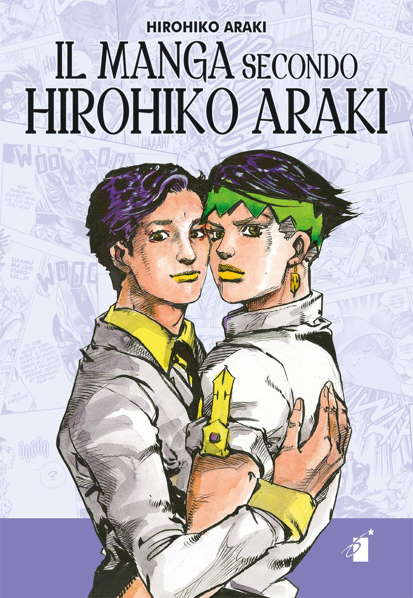

Hirohiko Araki (荒木 飛呂彦), nació en Sendai, Prefectura de Miyagi, 13 de junio de 1960 es un mangaka japonés. Principalmente es conocido por ser el creador de JoJo's Bizarre Adventure, el cual empezó a ser publicado en la revista Shōnen Jump de Shūeisha en 1987 y aún continúa en la revista Ultra Jump de la misma editorial.
 Araki nació y creció en Sendai, Japón
con sus padres y hermanas gemelas idénticas menores. Cita las molestias de sus hermanas como la razón por la
que pasó tiempo solo en su habitación leyendo manga, nombrando a Ai to Makoto (Obra de Ikki Kajiwara y
dibujada por Takumi Nagayasu publicado en la revista Shonen Magazine de Kodansha en 1973) como la más
importante para él, y los libros de arte de su padre, él supone que este fue su motivo para dibujar manga.
Araki nació y creció en Sendai, Japón
con sus padres y hermanas gemelas idénticas menores. Cita las molestias de sus hermanas como la razón por la
que pasó tiempo solo en su habitación leyendo manga, nombrando a Ai to Makoto (Obra de Ikki Kajiwara y
dibujada por Takumi Nagayasu publicado en la revista Shonen Magazine de Kodansha en 1973) como la más
importante para él, y los libros de arte de su padre, él supone que este fue su motivo para dibujar manga.
Él fue particularmente influenciado por el trabajo del artista francés Paul Gauguin. Después de que un amigo de la escuela elogió su manga, comenzó a dibujar manga en secreto, ocultándolo a sus padres. Presentó su primer trabajo en una revista en su primer año de escuela secundaria. Todas sus presentaciones fueron rechazadas, mientras que otros artistas de su edad o más jóvenes debutaron con éxito. Decidió ir a las oficinas de las editoriales en Tokio para averiguar por qué en persona, tomando un manga se quedó despierto toda la noche para terminar. El editor de Shueisha que conoció criticó mucho el trabajo, pero dijo que tenía potencial y para limpiarlo para los próximos Premios Tezuka. El manga fue Poker Under Arms.
Araki abandonó la Universidad de Educación de Miyagi antes de graduarse e hizo su debut en 1980 con el
one-shot ambientado en el salvaje oeste Poker Under Arms, que fue un "Trabajo Seleccionado" en el Premio
Tezuka de ese año.
 Su primera serialización fue Cool Shock
B.T. en 1983, sobre un joven mago que resuelve misterios. Pero la primera serie en mostrar su gore fue Baoh
de 1984.
Cuenta la historia de un hombre que está implantado con un parásito por una organización malvada, que le da
poderes sobrehumanos, y lo sigue mientras lucha contra ellos. Fue adaptado en una OVA en 1989, el manga fue
lanzado en los Estados Unidos por Viz Media en 1990 (en forma de tankōbon en 1995), pero la OVA no obtuvo un
lanzamiento en Estados Unidos hasta 2002.
No fue hasta The Gorgeous Irene en 1985, que realmente desarrolló su estilo de arte característico de
personajes musculosos (que más tarde se volvería más extravagante).
Su próxima serie se convertiría en su obra maestra, JoJo's Bizarre Adventure de 1987.
La serie comienza en la Inglaterra de 1880 y sigue a Jonathan Joestar (JoJo) y su hermano adoptivo Dio
Brando, este último finalmente intenta matar a su padre para obtener su parte de la herencia. Cuando se
enfrenta, Dio se pone una máscara antigua que lo convierte en un vampiro.
JoJo luego aprende una técnica de artes marciales llamada hamon (u ondas), y viaja al castillo de Dio para
matarlo. Los arcos subsiguientes de JoJo siguen a los descendientes de la familia Joestar, y muchos se
encuentran en diferentes partes del mundo.
La Parte 3, que se convertiría en la parte más popular de la serie, minimiza la técnica de la
historia y la ondulación vampírica y, en su lugar, presenta el poder de Stands, que continúa en la serie
actual. Aunque añadiendo en la parte 7, "Steel Ball Run" aparece una nueva técnica empleada por el
coprotagonista Gyro Zeppeli; el Gyro o Spin.